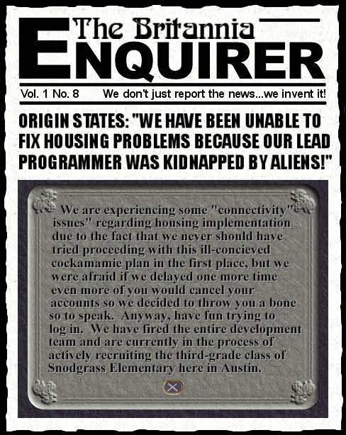
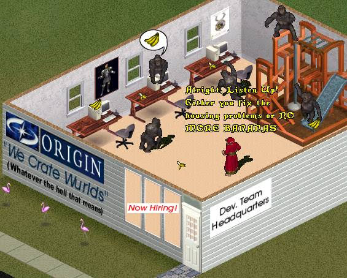

The Housing Issue - Now I don't want to get off on a rant here ...
Greetings fight fans, Brother Tryon here. I was going to to get into another all out rant against the housing insanity we have witnessed over the last couple of weeks, but I found I was so wound up my keyboard was threatening to report me for abuse, so instead I decided to do what I do best and boil the whole fiasco down into a comic. So without further ado here are my thoughts on housing in the form of:
EXCLUSIVE SNAPSHOT OF DEVELOPMENT TEAM TACKLING THE
HOUSING ISSUE - DIRECT FROM ORIGIN HEADQUARTERS!

Note 1: The above comic is intended as "SATIRE" and not to be taken as a serious accusation that OSI is targeting the lower primates in its staff recruitment efforts
Note 2: No gorillas (or plastic flamingos) were intentionally harmed during the filming of this sequence